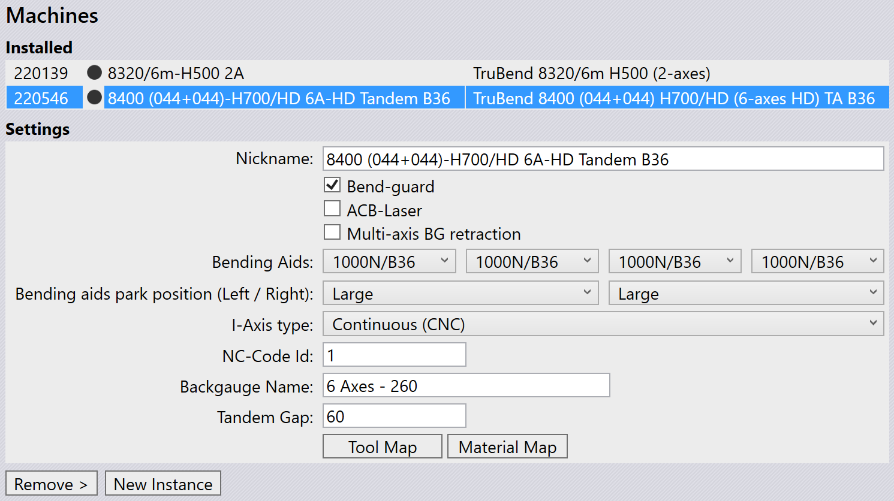

Βοηθήματα Κάμψης
Τα Βοηθήματα Κάμψης είναι εξαρτήματα μηχανής πρέσας κάμψης που βοηθούν στην κάμψη παχύτερων μεταλλικών φύλλων. Έχουν σχεδιαστεί για να παρέχουν πρόσθετη υποστήριξη και έλεγχο κατά τη διαδικασία κάμψης, διασφαλίζοντας ακριβή και συνεπή αποτελέσματα.
Μια πρέσα κάμψης μπορεί να έχει πολλαπλά βοηθήματα κάμψης ή ένα μόνο βοήθημα κάμψης εγκατεστημένο, ανάλογα με τις συγκεκριμένες απαιτήσεις της λειτουργίας κάμψης.
| Τα βοηθήματα κάμψης ισχύουν μόνο για τις σειρές TruBend 5000 και 8000. |

Διαμόρφωση Βοηθημάτων Κάμψης
Τα Βοηθήματα Κάμψης μπορούν να διαμορφωθούν στο Database / Machines / Settings.

Όταν εισάγεται ένα εξάρτημα και επιλέγεται μια μηχανή με βοηθήματα κάμψης, το TecZone Bend διαμορφώνει αυτόματα τα βοηθήματα κάμψης με βάση τις απαιτήσεις του εξαρτήματος.
Χρήση Βοηθημάτων Κάμψης
Μόλις δημιουργηθεί μια εφικτή λύση κάμψης, τα βοηθήματα κάμψης μπορούν περαιτέρω να προσαρμοστούν για τη βελτιστοποίηση της διαδικασίας κάμψης.
Κάντε κλικ απευθείας στο βοήθημα κάμψης στο TecZone Bend για να ανοίξετε τον πίνακα Bend Aid. Ο αριθμός στον πίνακα βοηθήματος κάμψης αντιπροσωπεύει την ακολουθία κάμψης.
![][Bending Aid Panel](img/bendaidpanel.png)
-
Index - Δηλώνει το τρέχον επιλεγμένο βοήθημα κάμψης.
-
Position (Z,R) - Χρησιμοποιείται για την προσαρμογή της θέσης του βοηθήματος κάμψης κατά μήκος των αξόνων Z και R.
-
Enabled - Επιλέξτε αυτό το πλαίσιο ελέγχου για να ενεργοποιήσετε το βοήθημα κάμψης.
-
Auto-Place - Χρησιμοποιείται για την αυτόματη τοποθέτηση του βοηθήματος κάμψης με βάση τη γεωμετρία του εξαρτήματος.
Speed:
-
Down - Χρησιμοποιείται για την προσαρμογή της ταχύτητας ανάσυρσης του βοηθήματος κάμψης μετά τη λειτουργία κάμψης.
-
Set All Bends - Χρησιμοποιείται για την εφαρμογή της τρέχουσας ρύθμισης ταχύτητας σε όλες τις κάμψεις στην ακολουθία.
Advanced:
-
Method - Χρησιμοποιείται για τον ορισμό της λειτουργικής κατάστασης του βοηθήματος κάμψης. Οι επιλογές περιλαμβάνουν:
-
Default - Επαναφέρει τις ρυθμίσεις του βοηθήματος κάμψης στις προεπιλεγμένες τιμές.
-
Return at UDP - Διαμορφώνει το βοήθημα κάμψης να επιστρέφει σε μια καθορισμένη από τον χρήστη θέση μετά από κάθε κάμψη.
-
Tilt product - Ενεργοποιεί το βοήθημα κάμψης να κλίνει το εξάρτημα κατά τη διάρκεια της διαδικασίας κάμψης για καλύτερη στοίχιση.
-
Static angle - Επιτρέπει τον ορισμό μιας σταθερής γωνίας για το βοήθημα κάμψης κατά τη λειτουργία.
-
-
Stop angle - Χρησιμοποιείται για τον ορισμό της γωνίας στην οποία θα σταματήσει το βοήθημα κάμψης κατά τη λειτουργία.
Θέση στάθμευσης Βοηθημάτων Κάμψης
Τα Βοηθήματα Κάμψης μπορούν να σταθμεύονται σε μια καθορισμένη θέση όταν δεν χρησιμοποιούνται. Αυτό βοηθά στη βελτιστοποίηση του χώρου εργασίας και διασφαλίζει την ασφάλεια κατά τη λειτουργία. Αυτό επίσης αποτρέπει συγκρούσεις με άλλα εξαρτήματα της μηχανής.
Τα Βοηθήματα Κάμψης μπορούν να σταθμευτούν στις ακόλουθες θέσεις:
-
Default - Τα βοηθήματα κάμψης μπορούν να σταθμευτούν μέχρι το μήκος του τραπεζιού.
-
Small - Τα βοηθήματα κάμψης μπορούν να τοποθετηθούν 700 mm πέρα από το μήκος του τραπεζιού.
-
Large - Τα βοηθήματα κάμψης μπορούν να τοποθετηθούν 1200 mm πέρα από το μήκος του τραπεζιού.

Για μηχανές tandem, υπάρχουν τέσσερα βοηθήματα κάμψης διαθέσιμα. Για αριστερές μηχανές tandem, επιτρέπεται μόνο η αριστερή πλευρά στάθμευσης. Για δεξιές μηχανές tandem, επιτρέπεται μόνο η δεξιά πλευρά στάθμευσης.
|
Η επιλογή θέσης στάθμευσης θα εμφανίζεται μόνο για τη σειρά TruBend 8000 και τις μηχανές VarioPress. Για μηχανές B36 tandem, η θέση στάθμευσης small δεν ισχύει. |
Δημιουργία προσαρμοσμένων βοηθημάτων κάμψης
Για να δημιουργήσετε προσαρμοσμένα βοηθήματα κάμψης στο TecZone Bend, πρέπει πρώτα να δημιουργήσετε ένα αρχείο ini που ορίζει τις παραμέτρους του βοηθήματος κάμψης και αρχεία mesh για τα εξαρτήματα του βοηθήματος κάμψης (Carriage, Table και Plate).
[BAData]
; The user defined name of the BendAid. Only used for custom bend aids
Name=BATest
; The range of V-widths the bend aid can support
DieV=16,250
; The range of die-heights the bend aid can support
DieHeight=-30,250
; Maximum angle, in degrees
MaxAngle=55
; Lift capacity, in kg
Payload=300
; Maximum lift speed, in degrees/second
Speed=45
; When the bending aid is at X=0, this is the bound of the support table in top view
Table=-159,-1032,159,-245.6
; The X-Span of the bending aid (when positioned at 0)
XExtent=-213,213
; Tells whether the user can change the forward speed
CanChangeForwardSpeed=False
; Tells whether safety stop angle is possible in the machine
CanStopAtReturn=True
; Can the bending aid movement be varied using different methods?
AdvancedControl=True
; What type of existing bending aid can this be mapped to? Used only by custom bend aids
EType=TB8000_2000N_B36
[Carriage]
Model=Carriage.mesh
Stroke=-1000,1000
Color=White
Shift=0,0,100
[Table]
Model=Table.Mesh
Stroke=50,200
Color=White
[Plate]
Model=Plate.mesh
Stroke=0,56
Color=#4A4A4AΤοποθετήστε το αρχείο ini και τα αντίστοιχα αρχεία mesh σε έναν φάκελο που στη συνέχεια μπορεί να εισαχθεί στο TecZone Bend.
Εισαγωγή προσαρμοσμένων βοηθημάτων κάμψης
Για να εισαγάγετε προσαρμοσμένα βοηθήματα κάμψης:
-
Πλοηγηθείτε στο File / Import / Bending Aids… και επιλέξτε το ήδη δημιουργημένο αρχείο ini (βεβαιωθείτε ότι τα αντίστοιχα αρχεία mesh βρίσκονται στον ίδιο φάκελο).
-
Τα εισαγόμενα βοηθήματα κάμψης θα είναι στη συνέχεια διαθέσιμα στο αναπτυσσόμενο μενού επιλογής βοηθήματος κάμψης στις ρυθμίσεις μηχανής.

Αυτή η επιλογή είναι χρήσιμη όταν ένα βοήθημα κάμψης πρέπει να προσαρμοστεί για συγκεκριμένες εργασίες κάμψης ή όταν χρησιμοποιούνται εξειδικευμένα βοηθήματα κάμψης που δεν περιλαμβάνονται στη προεπιλεγμένη βάση δεδομένων του TecZone Bend.